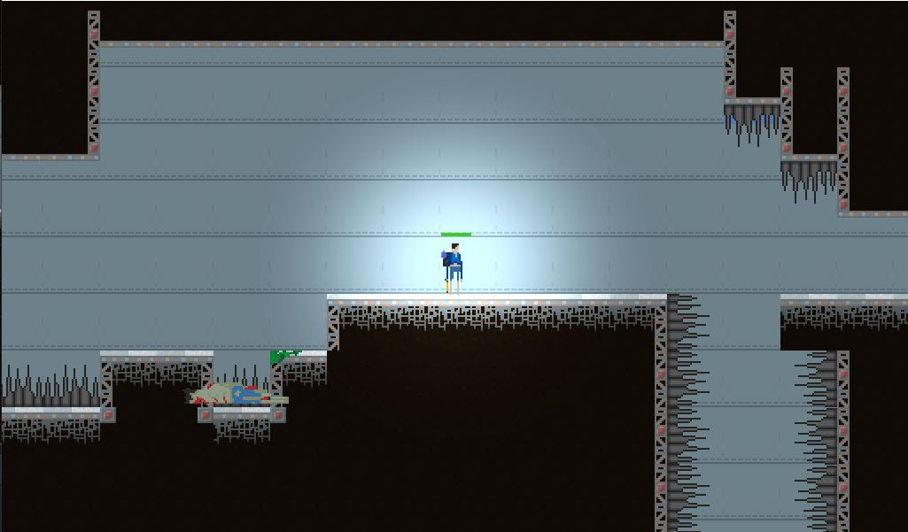

This was a sidescrolling shooter game that me and a friend were working on for the Australian STEM Video Game Challenge (which is a game jam run through schools where small teams compete to create a playable game in an engine of choice). Unfortunately, the jam was cancelled due to Covid-19, so we never finished the game. We decided to use Godot as our engine of choice, and I did almost all of the programming and game logic for the game.
